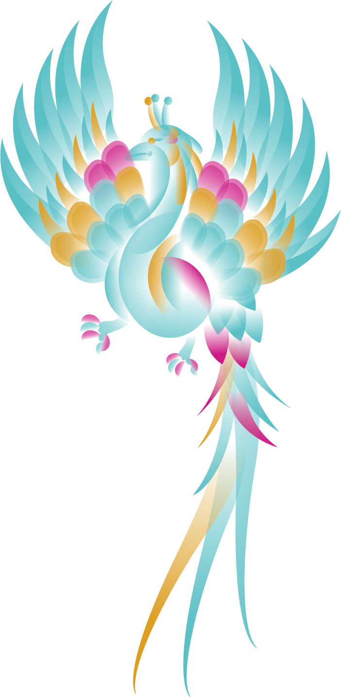
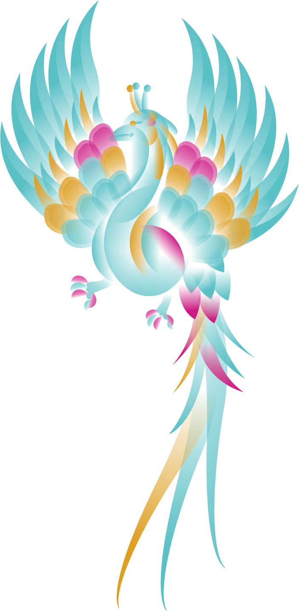
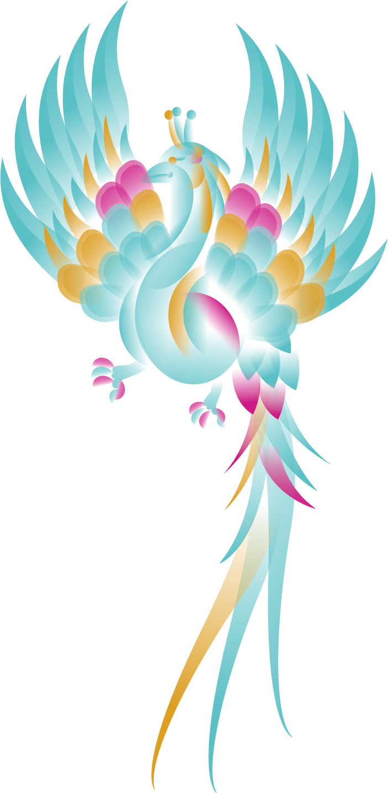
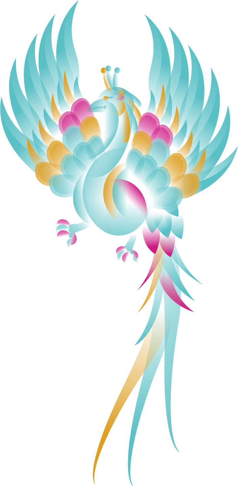

供奉的祖師乃源於福建省泉州府安溪鎮清水巖的清水祖師，清水祖師法號普足，北宋年代在安溪清水巖修道，以道行精嚴聞名閩南，是三峽三角湧，樹林石頭溪，鶯歌二甲九，大溪中庄，鶯歌石，地方七股〈劉姓、大集姓、陳姓、林姓、中庄集姓、李姓、王姓〉的信仰中心。

西元1767年.三峽三角湧.樹林石頭溪.鶯歌二甲九.大溪中庄.鶯歌石地方鄉民分七股以劉姓.大集姓.陳姓.林姓.中庄集姓.李姓.王姓.建造祖師廟.恭奉安溪清水巖迎來的清水祖師公.1899年第二次重建.1947年第三次重建。
廟建築型式採三進九開間殿堂式，全石作壁面，樑枋浮雕，五門皆為銅門，前殿正門並列哼哈二將，兩邊為四金剛，石柱無論圓雕，浮雕，透雕，皆精緻生動，無不巧妙，栩栩如生，木雕，精細繁複，每件雕刻都引經據典，氣韻生動，銅雕，充滿歷史典故，神態威武。
無論圓雕、浮雕或透雕，皆精緻生動，美妙絕倫，例如鎮守正門氣勢非凡的石獅、黃鶴樓周瑜設詭計、華容道關公放曹操、金雁橋孔明捉張任、飛龍案包公審狄青、鴻門宴等石窗人物之雕刻，均可看出師傅非凡的手藝。
木材選用檜木和樟木，為防蟲蛀，上貼金箔，無論花鳥、人物、飛禽、走獸都出自名家手筆，如拱角飛鳳，氣韻生動，為林松師傅的遺作，又每幅雕品均係一塊木材刻成，諸如前殿內拱的獅子，胸前的垂鍊和鍊子中央的鈴鐺，與獅子腳踏的球，球內吊一小球，全是一木雕成，由此可見木雕手藝之精巧與細穎。
全廟以上木下石的雕刻建造,主要分為天花板的木雕、柱體的石雕以及牆面上的銅雕三大類,我們從這三類的雕刻分別挑選出象徵吉祥的獅子、龍以及鳳凰作為主要形象視覺,以雕刻圖騰作為輔助圖形,並將此視覺延伸至各項應用物。
「台灣金」訴說台灣稻浪、芒果、鳳梨、金針花海…等，以及不畏艱辛的精神能量與金光閃閃的北港媽祖廟的虔敬信仰色彩。
「台灣紅」是台灣的人文色彩，無論是生命禮俗、節慶民俗、四季生態，處處可見台灣紅幸福的風采。
從空中鳥瞰台灣，翠綠的島、湛藍的海，陽光灑落陸海交界處，一道「台灣青」的光芒，台灣山水之美蘊藏其中，生機勃勃。
從祖師廟最有名的石雕裡,分別挑選出象徵辟邪驅惡的獅子,尊貴、威武的龍以及吉祥和諧的鳳凰作為主要形象。風格會想以漸層的方式繪製是想呈現石雕的立體感,使用具現代感的塑膠布疊印在封面撞色出新的質感,讓比較現代的畫風中帶有一點傳統味道。

三峽祖師廟三種主要雕刻為石雕、木雕、銅雕,分成三本介紹雕刻所闡述的民間故事,色彩風格統一並以攝影與線畫表現雕刻,部分較無法表現出細節的雕刻,則以線條繪製的方式呈現,透過紙材與特殊印刷的結合,讓無法到當地造訪或想深入探索的讀者閱讀時能透過本書感受到三峽祖師廟雕刻的美。
書的裡面有選最能代表石雕、木雕、銅雕三種雕刻分別以 3D 列印和雷射雕刻再上色的方式來模擬三種材質,在閱讀時可以能和內頁作品交錯比對,並了解正在廟宇裡的材質、顏色。